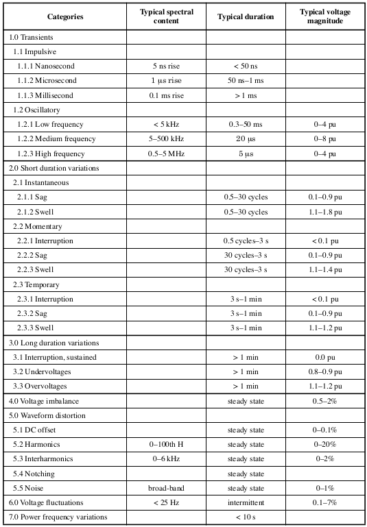

Una perturbación son los eventos que afectan o deterioran las características de la señal senoidal
que debe de tener el suministro eléctrico, las más comunes son: impulsos en el voltaje de línea, ruido,
transitorios, cambio en la magnitud de voltaje en estado estable, o alguna combinación de éstos, y la mayoría
son de duración corta. La IEEE divide las perturbaciones de acuerdo a la siguiente tabla:

Categorización de y caracteristicas de las principales perturbaciones en la energía eléctrica.